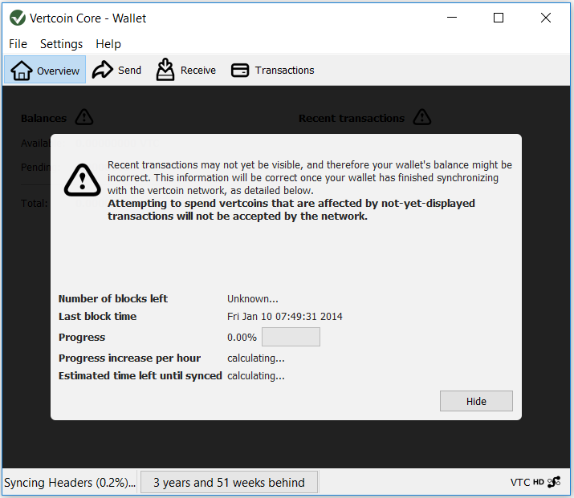
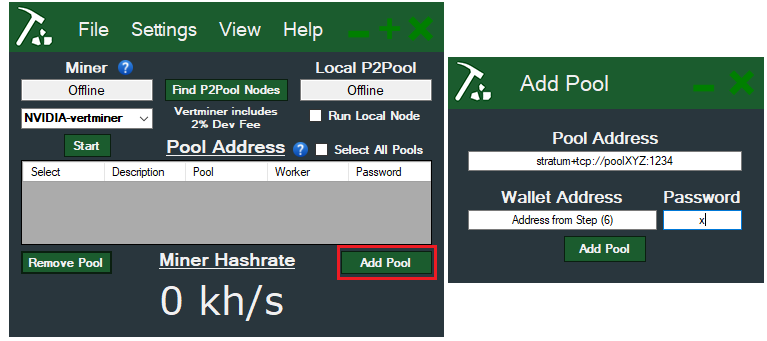
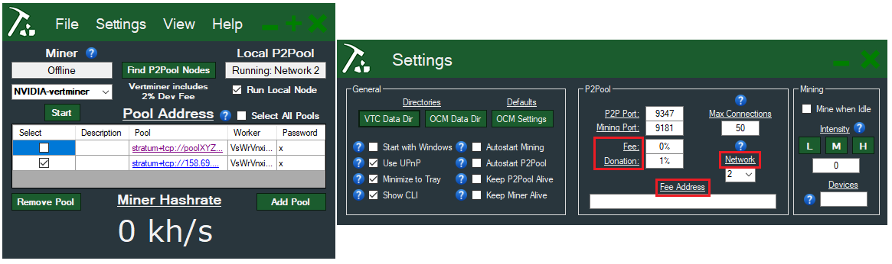
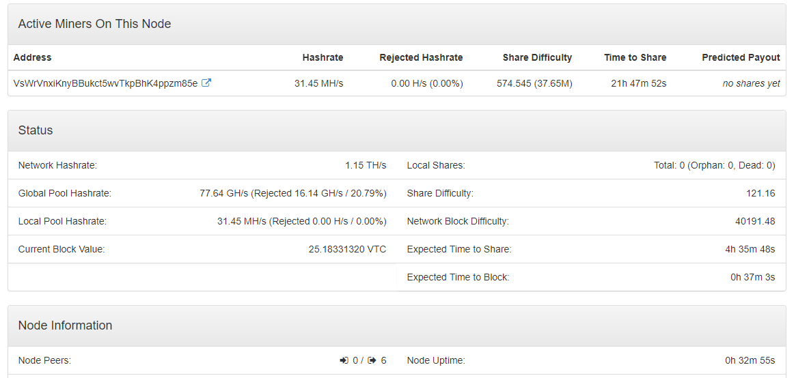

Vertcoin Nvidia Mining Guide¶
Table of Contents¶
- Introduction
- Basic Requirements for Mining VTC with Nvidia Cards
- Getting started (things you’ll need)
- Steps
- Installing and setting programs up
- Getting Miner’s address (to receive mining payment)
- Setting up One Click Miner to mine with regular mining pools
- Setting up One Click Miner to mine with p2pools
- Optimizing
- Final Checklist
- Troubleshooting/FAQ
Introduction¶
Hello there! Welcome to the VertDocs Nvidia Mining Guide. In cryptocurrency, mining means to provide computation power to solve certain mathematical equations which in return helps keep the entire network (also known as the blockchain) secure. Miners are incentivized by the block rewards provided when a block is found for the network.
Let's get started!
Basic Requirements for mining VTC with Nvidia Cards:¶
- Decent Equipment - A computer with (recommended) Nvidia 10 series or (minimum) Nvidia 9 series GPU.
- Understand your electricity tariff - Assuming an electricity tariff of $0.1/kWh, if you have Decent Equipment as stated above, you'll most likely mine with a decent profit. However, if your electricity tariff rate is low you may be able to mine profitably even with an older card.
- Stable internet connection - Doesn't need to be blazing fast, just normal cable/fibre will do but it has to be stable for optimum results.
- Patience - Setting up your mining tools etc. can be really quick, or it can be really troublesome for some people. As long as you have the heart to follow through, no reason you can't be mining with decent equipment! :)
- More patience - Ideally, set things up and let it run for 24 hours or more before you decide if its worth it at all. This is especially true if you are mining on p2pools (LINK TO GUIDE). Regular pools will pay you almost every hour, but that does not mean that it is better. You can try around to see what works best for you.
- Finish this guide! - No really. Try and finish this guide. I promise it'll be worth it!
That said, lets get going!
Vertcoin (VTC) is based on the Lyra2REv2 algorithm which is mineable by most modern Nvidia GPUS (10 series) profitably. However, this does not mean that older generation cards aren't able to mine at all - they can, but not as profitable as 10 series cards. As long as your card isn't overly dated (older than 9 series) you should still be able to make a smaller profit or breakeven. As a benchmark to get you started, you can estimate your card's profitability using CoinWarz's online calculator.
Assuming you have a Standard Desktop with 1 GPU, calculate your power as 100W (for all other components in PC) + GPU draw) and leave the other fields as default. As a guide a table below shows the rough hashrate of several Nvidia 10 series GPUs:
| GPU Model | Hashrate (Mh/s) | Power Consumption (W) |
|---|---|---|
| GTX 1050ti | ~15 Mh/s | 70 watts |
| GTX 1060 3gb | ~ 22 Mh/s | 100 - 120 watts |
| GTX 1060 6gb | ~ 27 Mh/s | 100 - 120 watts |
| GTX 1070 | ~ 35 - 40 Mh/s | 150 watts |
| GTX 1070ti | ~ 40 - 45 Mh/s | 180 - 250 watts |
| GTX 1080 | ~ 45 - 50 Mh/s | 250 watts |
Note that the values above are only estimates, and can be a lot better with proper optimization. For example, an optimized GTX 1070 (limit to 65% power, core overclock +130) can achieve 34 Mh/s while only drawing ~100 watts. As miner software and better graphic drivers gets released overtime, it is likely that you will see more (slight) increases in your card's mining efficiency.
Getting Started¶
Vertcoin mining is simple and easy to get into. To get started with Nvidia mining, you will require the following: * (a) Vertcoin Core Wallet (Note: Do NOT mine to electrum wallet – here’s why) * (b) Vertcoin’s One Click Miner * © Address of the mining pool you wish to mine on (eg. stratum+tcp://vertpoolname:1234) * (d) To monitor/optimize – MSI Afterburner
Steps:¶
Installing and setting programs up¶
- Download and unzip
(a) Core Wallet. Vertcoin-qt.exe will be the one you use most of the time as it is the one with the Graphical User Interface. During first start up you will be prompted to select your Blockchain Data location – put it on a storage with plenty of space.

- Open up
(a) Core Walletand let it sync – the rate at which the sync occurs should increase as you get more connections to other Core Wallet users (it is p2p, which means other users share their data for you to download). You can increase the speed at which it syncs by downloading the Bootstrap file.

- Install
(b) Vertcoin One Click Miner(OCM). When you run it for the first time it will prompt you to select your Vertcoin Blockchain Data (in this example it is D:\VTC Blockchain Data as indicated in the picture above)
Getting your Miner’s Address (You will receive payment with this)¶
- While the Core Wallet syncs, Click
Hideto hide the sync progress window and reveal the User Interface.

- Navigate to
Receiveand enterLabelas appropriate (eg. Mining from Pool XYZ) > ClickRequest Paymentand an address will be generated for you. Double click on your generated address to reveal more information.

- You may now minimize the Vertcoin Core Wallet to let it continue syncing – the generated receiving address will be used later.
Setting up One Click Miner to mine on regular mining Pools (For P2Pools please move to the next section.)¶
- Open up the OCM (Vertcoin One Click Miner.exe) you have just installed.
- Navigate to
Add Pooland enter the following (refer to image below): - Your Miner Address generated in Step (5) into Miners Address Field. Beware of any ninja “space” behind the address when pasting!
- Your © Pool Address into the Pool Address Field.
- Leave password as x. It does not affect your mining.
- (Optional) Add description as necessary to help remember pool details

-
On the left side of the interface, select Nvidia (ccminer OR Vertminer) and click
-
Click
Start. OCM will prompt you to install whichever miner you have selected.
(Note: Vertminer is a repackaged ccminer which includes 2% donation (you donate 2% of your hash time), but users typically report 2 to 8% increase in hashrate as it is optimized for VTC’s algorithm, so it may be well worth it. Feel free to experiment between both miners.)

- Click
settingson top, tickShow CLI– this will help you determine if you are mining correctly by showing the command line window. Once you have gotten the hang of it and you know your miner runs fine, you may untick it as it will not affect your mining in any way. - If you would like to add more pool to the list, feel free to do so. Those pools will act as failovers – the miner switches over to those if the pool you are currently mining on goes down. OCM will pick the first pool in the list to begin mining. Move to the next step if you do not want to add more pools.
- Once you have completed all the steps above, you may click
Startto begin mining. You should see something similar to below:

If you see something similar to the above, congratulations! You are now mining!
- Continue to mine until you get your first payment. Once you get it, you can be sure that you are mining Vertcoin!
Setting up One Click Miner to mine on P2Pools¶
If you are wondering where there is a need to mine on p2pool, read (Link to p2pool document). In essence P2Pool helps with decentralization and distribution of hashrate. For some, p2pool mining is also slightly more profitable since they can mine locally which eliminates issues arising due to latency and/or dependencies on other mining pools' uptime.
-
Open up OCM, go to settings. For p2pool hosting there are a few settings that you should take note of:
- Network - Select the appropriate network based on your mining hashrate. Network 1 is made for miners with >100 Mh/s while Network 2 is made for miners with <100 Mh/s. Alternatively, you can check out the P2Proxy Pool.
- Fee - This represents the fee you collect from miners who mine on your p2pool.
- Fee Address - Fees you collect will be in this address.
- Donation - % of Mining proceeds on your p2pool will go to the VTC developers

-
In OCM, tick
Run Local Node. A CLI should open up as below:
It should then load up to something similar to below:

-
Once you get the above up and running, click on
Add Pooland add the following in Pool Address field:- Network 1: stratum+tcp://localhost:9171
- Network 2: stratum+tcp://localhost:9181
Worker address is taken from the one you generated in Step (5). Password can be x.
-
After this is done, select the pool you just added and start mining away! You can verify that you are mining by checking the following:
-
In OCM, the Miner Hashrate isn't 0 kh/s
-
After a few minutes, open up your browser, go to (Network 1) http://localhost:9171/static/ or (Network 2) http://localhost:9181/static/. Your miner should be on the list and has a non-zero share difficulty associated with it.
-
Similarly, if you mine on other people's pool, you should see something similar to below when you are mining correctly.

If yours look similar to the above, you are good to go!
-
Note: Mining on P2Pool involves a bit of luck and you may need to wait up to 24h before getting your first payout.
Optimizing:¶
If you are able to run everything, you may try to optimize your mining rate by limiting certain parameters on your card – do this on your own risk! The optimizing mentioned here are just suggestions – please feel free to tweak as necessary.
- MSI Afterburner
- Option 1: 65% Power, +100 Core Clock, -400 Memory Clock
- Option 2: 90% Power, +100 Core Clock, -400 Memory Clock
-
Change your fan settings! Generally it is recommended to keep your card temperature below 70°C so adjust the fan curve as necessary.
-
Intensity Settings in OCM
It is generally recommended to leave intensity as default “0” (max) so that the software can automatically optimize the miner to provide the best results. However, your mileage may vary and it is still recommended that you try it out to see the results for yourself.
- Hardware: Casing airflow
If you haven’t done so, it may be a good time now to investigate your casing’s airflow (check your fans, clean out the dust filter, make sure there is some form of air circulation etc.). A cool GPU is a happy GPU, and a happy GPU gives the best results :) Once again, it is recommended to keep temperatures below 70°C.
Quick TL;DR Checklist:¶
- Installed (a) Vertcoin Core Wallet and (b) One Click Miner.
- Added both items to Exclusion list of Anti-virus and Firewall
- Generated a Receiving address with Core Wallet
- Installed Nvidia Miner on One Click Miner
- Miner hashrate on OCM is not 0 when start is clicked
- If mining on P2Pool, miner is on list and hashrate is shown along with non-zero share difficulty.
Troubleshooting:¶
- If you haven't yet, try restarting your PC after installing everything!
- Stratum Connection failed!
- Check your Firewall/Antivirus settings. Miner programs occasionally get blocked or flagged as malicious.
- Try a different pool instead, the pool could be down at the moment.
- No Hashrate shown in OCM despite successful connection in CLI
- Check your Graphic Drivers and ensure they are up to date
- Why don’t I see my payouts in the Core Wallet even after the pool says that it has paid?
- Your core wallet may not be fully synced (not up to date with the latest blockchain data). Give it some more time and it should show up as soon as it syncs up to the point where you are paid.
- On the P2Pool web interface (http://localhost:91x1/static/) why does my miner have 0 share difficulty?
- You may have accidentally included a "ninja" space behind your Miner Address when pasting it during the Add Pool step!
- I have been mining on the p2pool for 24 hours, and still did not get any payouts at all!
- This is where you need to give your miner some more time - mining on p2pool involves some luck and when you are lucky, you find more shares than usual (more payouts, yay!) and when you get unlucky, you don't find shares for a period of time (boo! :( I know) but if you have mined for long enough, it should even out based on your estimations.
- Alternatively, try mining on P2Proxy Pool if you are really struggling to find shares.
That is all for the Vertcoin Nvidia mining guide! I hope you've enjoy this guide as much as I have enjoyed writing it. Thank you, and good luck mining!